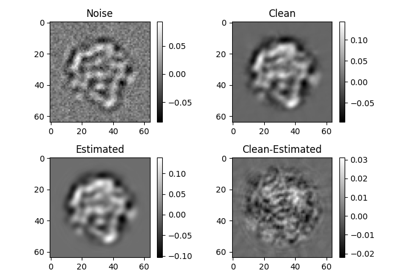
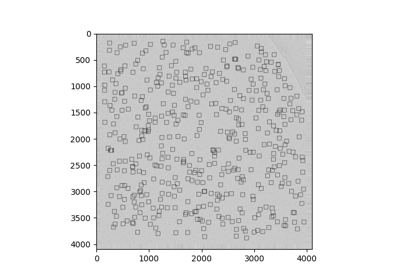
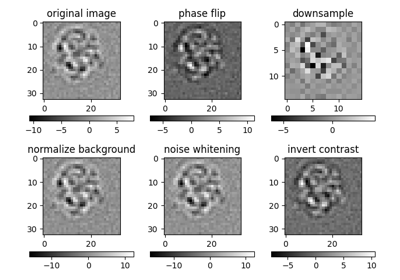
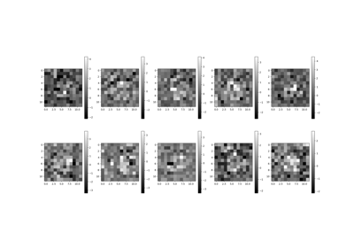

Component Examples¶
Selected components demonstrate some common tasks while discussing usage and configuration.

2D Covariance Estimation

ASPIRE Image Class

Apple Picker
Basic Image Array

Class Averaging

Data Downloader
Generating 3D Volume Projections
Generating 3D Volume Projections


Image Preprocessing
Micrograph Sources
Relion Projection Interoperability
Relion Projection Interoperability

Starfile
Weighted Volume Reconstruction
Weighted Volume Reconstruction